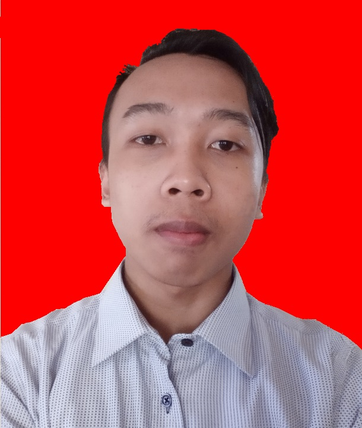

About Me
Profile Admin
 My name is Moh.Ramdhani, a graduate of SMKN 1 Gunungguruh, majoring in Computer & Network Engineering.
SMKN where I study is quite far from home, so I use a motorized vehicle to get to school on time.
Experience
I had an internship at a fairly prestigious company as an IT support position, which supports an expert in the IT field.
Address
My place of residence is in the Cicurug area, Sukabumi Regency, precisely in the Nyangkowek Village area Rt04/Rw04 No.17
Hobby
My hobby is playing computer, I also often clean my computer every month so that it can run normally either hardware or software.
Even when I was studying at school, I always took the time to study in the school's computer lab. Until now, I'm still active with computers. Even when I'm free, I sometimes take the time to learn how to code websites.
I can use the app Visual Basic, Mikrotik, C++, Macromedia Dreamweaver, Sublime Text
I can also operate the Debian 5 Operating System, often I find my friends whose laptops have problems with their OS often service with me.
I also have a hobby in photography even though I'm still a beginner in the field of photography, you can see the photos at Portfolio.